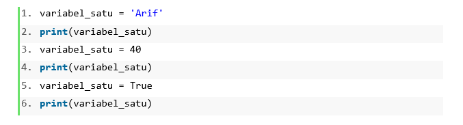
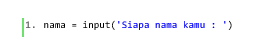
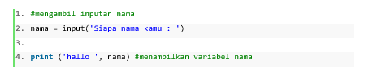

Kamu pasti paham bahwa bahasa pemrograman adalah hal wajib dikuasai para
programmer.
Istilah bahasa pemrograman diartikan sebagai kumpulan interuksi yang
diberikan kepada komputer agar melakukan tugas dalam menyelesaikan
permasalahan.
Jenis bahasa pemrograman itu ada banyak. Salah satu jenisnya adalah
Bahasa Pyhton. Dalam beberapa tahun terakhir, Python menjadi bahasa
pemrograman yang paling populer digunakan di berbagai belahan dunia.
Bahasa ini dapat digunakan untuk machine learning, pengujian perangkat
lunak sampai website.
Kemudian,
"Apa sebenarnya Bahasa Python itu? "
"Bagaimana Bahasa Python bekerja?", dan
"Apa saja struktur dasar Bahasa Python?"
Pengertian Bahasa Python
Python merupakan bahasa pemrograman komputer yang biasa dipakai untuk
membangun situs, software/aplikasi, mengotomatiskan tugas dan melakukan
analisis data. Bahasa pemrograman ini termasuk bahasa tujuan umum.
Artinya, ia bisa digunakan untuk membuat berbagai program berbeda, bukan
khusus untuk masalah tertentu saja. Karena sifatnya yang serba guna dan
mudah digunakan, ia menjadi bahasa pemrograman yang paling banyak
digunakan. Terutama untuk mereka yang masih pemula.
Nama Python sendiri berasal dari Monty Python. Ketika Guido van Rossum
membuatnya, dia juga sedang membaca skrip Sirkus Terbang Monty Python
BBC. Menurutnya nama itu singkat dan sedikit misterius. Karena itulah,
sang kreator memilih menggunakan nama tersebut untuk bahasa pemrograman
yang dibuatnya itu.
Bagaimana Python Bekerja?
Python sendiri termasuk dalam bahasa interpreter (penerjemah). Sebuah
bahasa interpreter bekerja dengan melakukan eksekusi sejumlah kode yang
ditulis dalam bahasa pemrograman tanpa perlu menyusunnya dalam bentuk
bahasa mesin. Proses ini berbeda dengan bahasa compiler, dimana kode
harus diubah terlebih dahulu ke dalam bahasa mesin sebelum dijalankan.
Interpreter pada python bekerja dengan mengubah kode bahasa python
menjadi sebuah format baru yang lebih mudah dijalankan oleh mesin.
Python menyimpan format baru ini dengan ekstensi .pyc (huruf c
mengindikasikan format python yang telah dicompile) kemudian format baru
tersebut dijalankan untuk menghasilkan suatu aplikasi.
Struktur Dasar Bahasa Python
1. Variabel
Pada python, sebuah variabel memiliki sifat dynamic typing. Yaitu sebuah
tipe variabel yang dapat berubah secara dinamis saat program berjalan.
Sehingga kita tidak perlu memerlukan deklarasi variabel. Perhatikan isi
variabel_satu pada kode berikut ini.

Pada baris 1, variabel_satu berisi String ‘Arif’. Pada baris 3 ,
variabel_satu berisi integer 40. Pada baris ke-5, variabel_satu berisi
True. Fleksibilitas variabel seperti ini yang merupakan salah satu
keunggulan dari bahasa Python.
2. Operator Assignment

tanda = disebut dengan operator assignment. Tanda ini digunakan untuk
memberi nilai pada suatu variabel. Pada contoh kode diatas maka, apapun
hasil input dari user akan disimpan pada variabel nama.
3. Komentar
Komentar digunakan untuk menambahkan keterangan pada kode sehingga akan
membantu siapapun yang membaca kode tersebut agar lebih mengerti. Suatu
komentar pada kode tidak akan dieksekusi oleh interpreter. Pada Python,
suatu komentar diawali dengan tanda #.

Artikel ini berdasarkan modul Struktur Dasar Bahasa Python. Pelajari
selengkapnya di bawah ini.